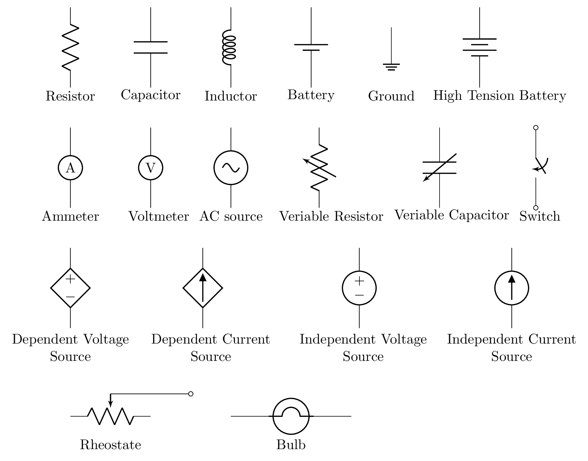
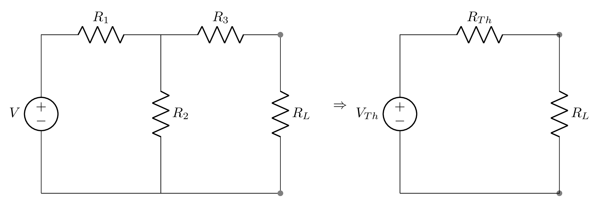
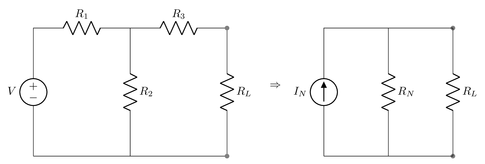
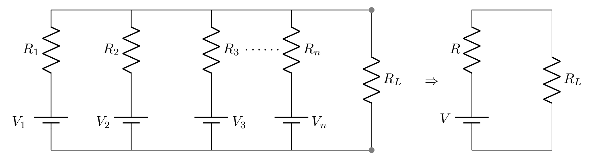
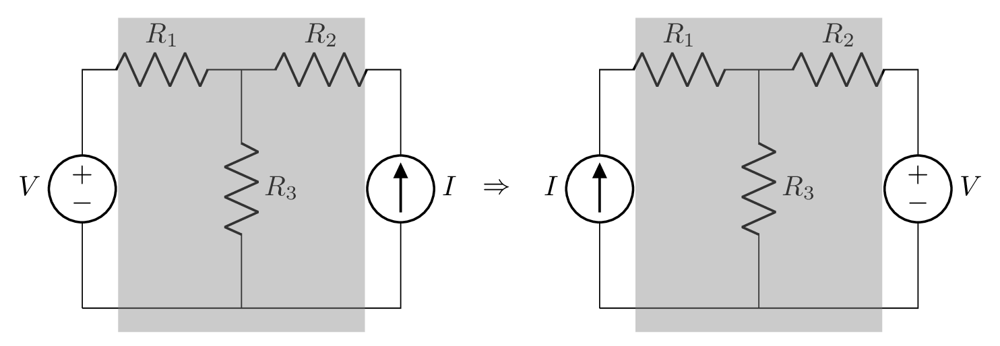

Section 1.1 Linear and Non-linear circuit:
Circuit whose elements follow Ohm’s law or has linear relationship between current and voltage is known as linear circuit, otherwise it is a non-linear circuit.
Subsection 1.1.1 Independent and Dependent power sources:
A device or energy source which provides voltage or current in the circuit is known as power source. It is of two types. A device whose power is independent on the other element/s of the circuit is known as independent source, otherwise it is a dependent source. Typically independent sources are of two terminal devices and dependent sources are of four terminal devices. The dependent sources are also known as controlled sources. A controlled current source can be controlled by current or voltage in the circuit, similarly controlled voltage source can also be controlled by current or voltage in the circuit. The circuit symbols of some of the components are given here.

Note: It is considered that an ideal voltage source has a negligible internal resistance and an ideal current source has an infinite internal resistance. Ideal voltmeter has an infinite internal resistance and ideal ammeter has a negligible internal resistance.
Subsection 1.1.2 Network Theorem
Subsection 1.1.3 Superposition Theorem:
It states that total voltage drop at an element of the circuit or total current through an element of the circuit is the algebraic sum of the voltages across (or currents through) this element due to individual sources as if they were acting on it independently. Superposition theorem will be helpful when more than one type of sources are acting in a linear circuit.
- Steps to use Superposition theorem: Step 1: Identify an element as a load resistor across which voltage or current is to be calculated.
- Step 2: Remove all the sources from the circuit except one independent source and leave all the dependent sources as they are.
- Step 3: When removing sources make sure the voltage sources are replaced by short circuit or leaving behind its internal resistances and current sources are replaced by open circuit.
- Step 4: Find the current or voltage across the load for each of the individual sources at a time using basic circuit analysis tools such as Ohm’s law and Kirchhoff’s law.
- Step 5: Find the algebraic sum of individual currents through or voltages across the load.
Subsection 1.1.4 Thevenin’s Theorem:
It states that any complex or a linear circuit network with current and voltage sources can be replaced by an equivalent circuit containing a single independent voltage source \(V_{Th}\) with single resistor \(R_{Th}\) in a series.
- Steps to use Superposition theorem: Step 1: Open the load resistor.
- Step 2: Calculate the open circuit voltage and call it a Thevenin Voltage, \(V_{Th}\text{.}\)
- Step 3: Open current sources and short voltage sources.
- Step 4: Calculate the open circuit resistance and call it a Thevenin Resistance, \(R_{Th}\text{.}\)
- Step 5: Redraw the circuit with calculated \(V_{Th}\) as a voltage source, \(R_{Th}\) as a series resistance, and finally connect the load resistor.
Now solve using basic circuit analysis tools such as Ohm’s law and Kirchhoff’s law.

Subsection 1.1.5 Norton’s Theorem:
It states that any complex or a linear circuit network with current and voltage sources can be replaced by an equivalent circuit containing a single independent current source \(I_{N}\) with a single parallel resistor \(R_{N}\text{.}\)
- Steps to use Superposition theorem: Step 1: Short the load resistor.
- Step 2: Calculate the short circuit current and call it Norton Current, \(I_{N}\text{.}\)
- Step 3: Open current sources, short voltage sources, and open load resistor.
- Step 4: Calculate the open circuit resistance and call it Norton Resistance, \(R_{N}\text{.}\)
- Step 5: Redraw the circuit with calculated \(I_{N}\) as a current source, \(R_{N}\) as a parallel resistance, and finally connect the load resistor.
Now solve using basic circuit analysis tools such as Ohm’s law and Kirchhoff’s law.

It is useful to convert current source into voltage source and vice a versa sometime to solve the complex circuit. Thevenin’s logic can be applied to the voltage source with a resistor in series and Norton’s logic can be applied to the current source with a resistor in parallel to convert from one another. They are interchangeable.
Subsection 1.1.6 Millman’s Theorem:
It states that when a number of voltage sources \((V_1, V_2, V_3, \cdots, V_n)\) and their respective (internal) resistors \((R_1, R_2, R_3, \cdots, R_n)\) are in parallel then the arrangement can be replaced by a single equivalent voltage source V in series with an equivalent series resistance R.
- Steps to use Millman’s theorem: Step 1: The load must be removed.
- Step 2: Short the load terminal temporarily to calculate total current in the circuit.
- Step 3: The voltage sources is replaced with short circuits.
- Step 4: Calculate the equivalent resistance, \(R\text{.}\)
- Step 5: Use Ohm’s law to calculate equivalent voltage, \(V\text{.}\)

Subsection 1.1.7 Reciprocity Theorem:
It states that in a linear and bilateral circuit the current due to a single independent source in any particular branch of circuit is equal to the current in the original branch where the source was placed when the source is shifted to that particular branch of circuit. In other words, the ratio of response to excitation is constant in the circuit where voltage source (or excitation) and current response (ammeter) can be interchangeable.
- Steps to use Reciprocity Theorem: Step 1: First check if the given circuit is a linear and bilateral (reciprocal circuit) with only one source.
- Step 2: Select the branch between which reciprocity is to be checked.
- Step 3: Find the value of current in branch using basic circuit analysis.
- Step 4: The voltage source is interchanged between the branches concerned.
- Step 5: Calculate the current in the branch where the voltage source was existing earlier.
- Step 6: Check that current calculated in step 3 and step 5 are same.
